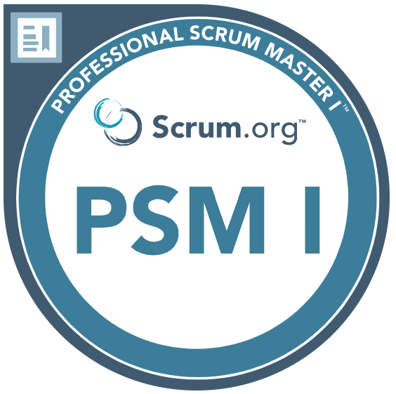
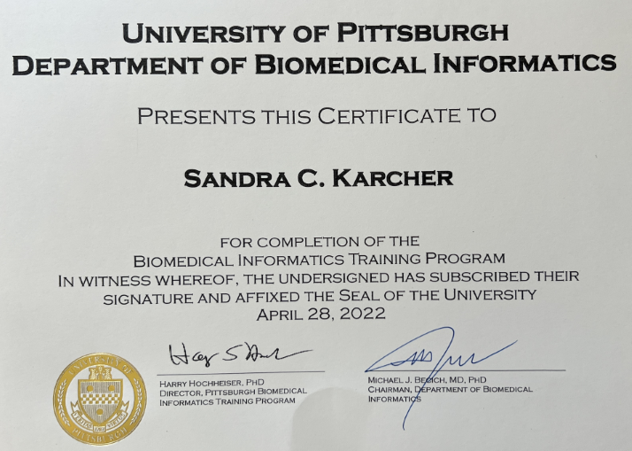
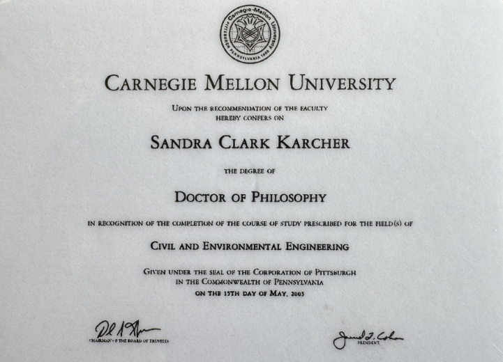
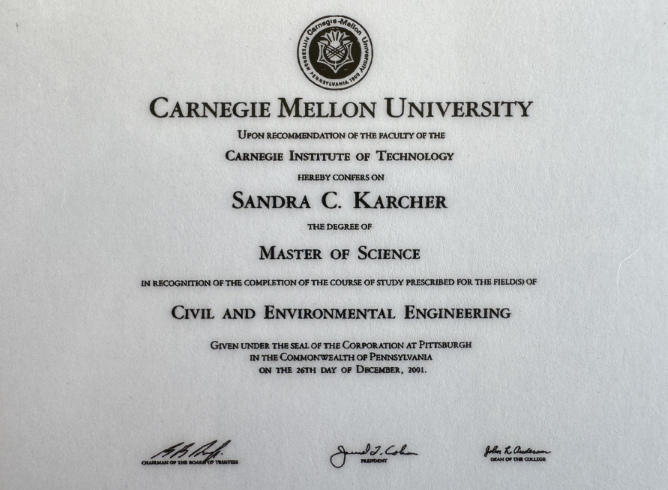

Welcome to My Web Page!
I am an experienced IT professional with a broad background in software design and development, database management, statistical analysis, geospatial modeling, teaching, training, proposal writing, and report preparation. Specific areas of expertise include developing algorithms and writing scripts to extract, transform, cleanse, slice, analyze, aggregate, and visualize data. Specific fields of interest include chemistry, biology, and biomedical informatics.
Sandra Karcher
Database/Software Engineer
My Background
The common thread of my professional experience is working with data. My data journey started with an internship with the Maryland Environmental Service, where I used soil and water sampling data, weather data, and projected dredged material inflow data to model mass balance and estimate the remaining life of Hart-Miller Island. In my first job after graduating from college, I collected soil and water samples from an Air Force base in Arizona, then organized, complied, cleaned, and submitted the data to the Air Force for inclusion in their Environmental Resources Program Info Management System (ERPIMS, formerly IRPIMS). I continued working with laboratory data for several years.
In 2000, I started graduate school and graduated with a PhD from Carnegie Mellon University. Over the next several years, I explored teaching (teaching classes at Geneva College and Carnegie Mellon University) and worked on a research project using ArcGIS to model the effects of watershed management practices. In 2014, my career began to pivot to focus on biology data and web application development.
Since 2016, I have been working as a software/database engineer on the Microphysiology Systems Database (MPS-Db), a publicly accessible web application funded by the National Center for Advancing Translational Sciences (NCATS) and developed at the University of Pittsburgh Drug Discovery Institute. The MPS-Db was a platform for capturing, managing, visualizing, analyzing and sharing experimental study data. In 2023, the MPS-Db was merged into Numa Biosciences (formerly Nortis), and in 2024, the platform transitioned to a subscription service, EveAnalytics.
Working
My first job - organizing, cleaning, and preparing data for submission to the Air Force.
Teaching
Presenting database design and implementation for N4mics.
Traveling
Visiting a blank sand beach in a recent trip to Hawaii.
Fun Facts About Me
- I am a lifelong leaner.
- I am detail oriented.
- I have good people skills and communicate effectively.
- I enjoy working collaboratively and independently.
- I think working with data is like solving a puzzle and I enjoy solving puzzles.
- I work best by mulling over complex problems, breaking them into pieces, then placing each piece into a solution network.
- I like animals and watch too many vet shows.
- I help with the children's ministry at my church.
- I play the flute in the Harrisville Community Band, the Mercer Community Band, and in the ACTS Orchestra.
- I manage the websites for the Harrisville Community Band (https://harrisvillecommunityband.weebly.com) and for ACTS (http://www.adoringchristthrusong.org).
- I enjoy bike riding.
- I have nine siblings.
- I am a fan of Star Trek, Star Wars, Stargate, and Fringe.
- My favorite joke: I am not an outlier, I just haven't found my distribution yet.
Skills Summary List
Skills as a Searchable and Sortable Table
Use the search box to search the table by the content of any column. Use the dropdown to select the number of entries to show in the table. Use the up and down arrows in the column headers to sort the rows. For multi-column sort, sort the first column, then hold the shift key and then click the sort arrow in additional columns.
Certifications & Licenses
Professional Scrum Master I
Certification can be verified here: https://www.scrum.org/certificates/866796 (enter SandraKarcher44@gmail.com)
PA Professional Engineer
Professional Engineer License PE082453 can be verified here: https://www.pals.pa.gov/#!/page/search
Biomedical Informatics
Graduate Certificate University of Pittsburgh
Education
PhD
Civil and Environmental Engineering
Carnegie Mellon University
Master's
Civil and Environmental Engineering
Carnegie Mellon University
BS
Civil and Environmental Engineering
University of Maryland
Work Experience
- 2023 to Current – Senior Software Engineer, Numa Biosciences (formerly Nortis)
- Designed and developed a tool that enables uploading and downloading of data and metadata into and out of EveAnalytics (formerly known as the Microphysiology Systems Database (MPS-Db) and the BioSystics-AP) using the same data format.
- Led the development team through the process of transitioning biosystics-ap.com (an open data repository) to eveanalytics.com (a subscription-based data management and analytics platform).
- Acted as Scrum Master (using the Agile methodology) throughout the process of transitioning biosystics-ap.com to eveanalytics.com.
- 2016 to 2023 - Staff System/Programmer, University of Pittsburgh Drug Discovery Institute
- Deployed Django web application in AWS using Elastic Beanstalk.
- Enabled the integration of transcriptomic data into the MPS-Db.
- Designed and developed a statistical tool to calibrate raw plate reader assay data and incorporated it into the MPS-Db.
- Developed algorithms to extract, transform, cleanse, slice, analyze, aggregate, and visualize data to support downstream analysis, modeling, and visualization (primarily using Python, VBA and SQL).
- Prepared training materials and provided training to internal team members and external collaborators.
- Provided training at technical support to users of the MPS-Db.
- Designed an effective data governance framework for uploading data into the MPS-Db (e.g., defining the parameters for data acquisition, import, and usage; selecting appropriate controlled vocabulary to enable data from disparate sources to be aggregated together; creating processes for identifying and resolving data quality issues).
- 2014 to 2016 - Postdoctoral Project Engineer, Carnegie Mellon University
- Worked in collaboration with the Center for the Environmental Implications of NanoTechnology, nanoHUB, and the Nanomaterial-Biological Interactions Knowledgebase to develop analytical and visualization informatics tools to be used on experimental data exploring the fate and associated risk of introducing nanomaterials into the environment (https://nanohub.org/resources/23991).
- Designed and built a relational database to aggregate, store, and maintain data collected as part of experimental studies performed using nanomaterials.
- 2013 to 2014 - Adjunct Professor, Carnegie Mellon University
- Taught Databases & Data Systems for Environmental Modeling, a hands-on class focused on finding, formatting and visualizing data frequently used in environmental modeling.
- 2009 to 2012 - Postdoctoral Research Associate, Carnegie Mellon University
- Collaborated with colleagues at the EPA to assess the challenges associated with modeling water systems from the watershed through the drinking water treatment process.
- Used the Soil and Water Assessment Tool (SWAT), an ArcGIS modeling tool, to quantify changes in nutrient loading resulting from changes in watershed management practices.
- 2006 to 2008 - Adjunct Professor, Geneva College
- Taught Solid & Hazardous Waste Management and Water & Wastewater Treatment. The solid waste class focused on the collection, transformation, and disposal of solid and hazardous waste. The water class included a weekly lab and focused on technologies used in testing and treating water.
- 2000 to 2005 - Graduate Student, Carnegie Mellon University (Master’s & PhD)
- Designed and developed a statistical modeling tool to determine the likely pathways of dechlorination of polychlorinated biphenyls in river sediments. Tool implementation required extensive use and integration of Microsoft Access and Excel using Visual Basic for Applications (VBA) and SQL.
- Served as teaching assistant for the freshman level introduction to civil and environmental engineering course and for the graduate level probability and statistics course.
- 1993 to 2002 – President & Consultant, Data Systems DCM
- Compiled and standardized U.S Air Force environmental sampling data from multiple sources provided in a variety of formats.
- Developed and programmed tools to search for patterns, trends, and anomalies in data; to flag potentially erroneous data; and to cleanse the database (primarily using VBA and SQL).
Publications
Select Publications
- Schurdak M, Vernetti L, Bergenthal L, Wolter QK, Shun TY, Karcher S, Taylor DL, Gough A, Applications of the microphysiology systems database for experimental ADME-Tox and disease models. Lab Chip. 2020 Apr 14; 20(8):1472-1492. https://doi.org/10.1039/C9LC01047E
- Dilán-Pantojas, IO, Boonchalermvichien, T, Taneja, SB, Li, X, Chapin, MR, Karcher, S, Boyce, RD, Broadening the capture of natural products mentioned in FAERS using fuzzy string-matching and a Siamese neural network. Sci Rep 14, 1272 (2024). https://doi.org/10.1038/s41598-023-51004-4
- Karcher, S.C., Harper, B.J., Harper, S.L., Hendren, C.O., Wiesner, M.R., Lowry, G.V., Visualization Tool for Correlating Nanomaterial Properties and Biological Responses in Zebrafish. Environmental Science: Nano 3: 1280-1292 (2016). https://doi.org/10.1039/C6EN00273K
- Marchese Robinson RL, Lynch I, Peijnenburg W, Rumble J, Klaessig F, Marquardt C, Rauscher H, Puzyn T, Purian R, Åberg C, Karcher S, Vriens H, Hoet P, Hoover MD, Hendren CO, Harper SL. How should the completeness and quality of curated nanomaterial data be evaluated? Nanoscale. 2016 May 21; 8(19):9919-43. https://doi.org/10.1039/C5NR08944A
Additional Publications
- Karcher, S.C.; Willighagen, E.L.; Rumble, J.; Ehrhart, F.; Evelo, C.T.; Fritts, M.; Gaheen, S.; Harper, S.L.; Hoover, M.D.; Jeliazkova, N.; Lewinski, N.; Robinson, R.L.M.; Mills, K.C.; Mustad, A.P.; Thomas, D.G.; Tsiliki, G.; Hendren, C.O.; (2018) "Integration among Databases and Data Sets to Support Productive Nanotechnology: Challenges and Recommendations" NanoImpact 9: 85-101.
- Karcher, S.C.; VanBriesen, J.M.; Nietch, C.T. (2013) "Alternative land use layer for spatially-informed watershed management decision-making using SWAT" ASCE Journal of Environmental Engineering 139(12): 1413–1423.
- Karcher, S.C.; VanBriesen, J.M.; Nietch, C.T. (March 2012) "Assessing the Challenges Associated with Developing an Integrated Modeling Approach for Predicting and Managing Water Quality and Quantity from the Watershed through the Drinking Water Treatment System" EPA/600/R-12/030.
- Karcher, S.C., VanBriesen, J.M., and Small, M.J (2007) "Numerical Method to Elucidate Likely Target Positions of Chlorine Removal in Anaerobic Sediments Undergoing Polychlorinated Biphenyl Dechlorination" ASCE Journal of Environmental Engineering, 133(3): 278-286.
- Karcher, S.C., Small, M.J., and VanBriesen, J.M., (2004) "Statistical Method to Evaluate the Occurrence of PCB Transformations in River Sediments with Application to Hudson River Data" Environmental Science and Technology 38:6760-6766.
- Ph.D. Thesis: "Statistical Method for Polychlorinated Biphenyl Dechlorination Modeling and Pathway Analysis", 2005.
- Contributor to "Sustainable Water Innovation Initiative for Southwestern Pennsylvania" a report of the Water Innovation Consortia Planning Committee September 2012 (http://www.pittsburghwed.com/resources/index.html; accessed June 30, 2013).
- Contributor to "Living in the Water Environment: the WATERS Network Science Plan" Prepared for review by the National Science Foundation and the National Research Council in May 2009.